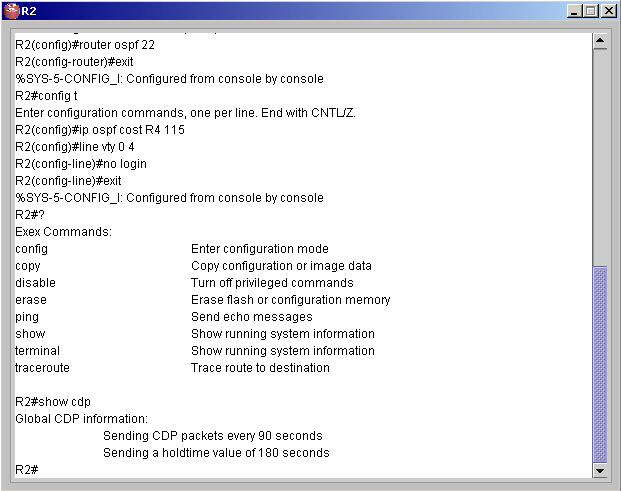
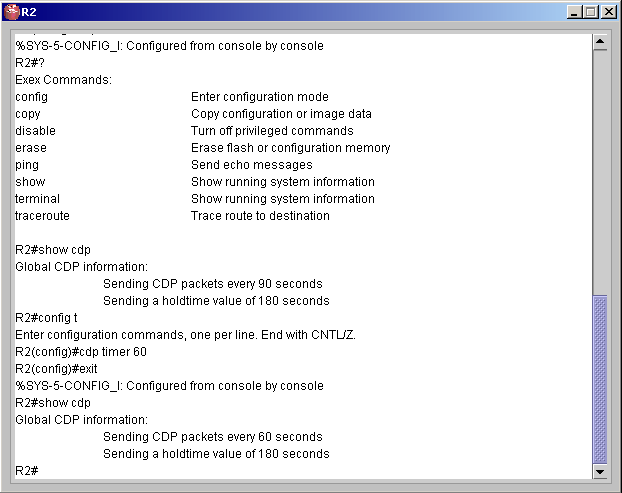
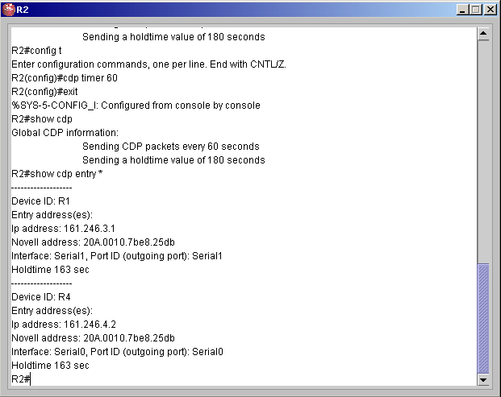
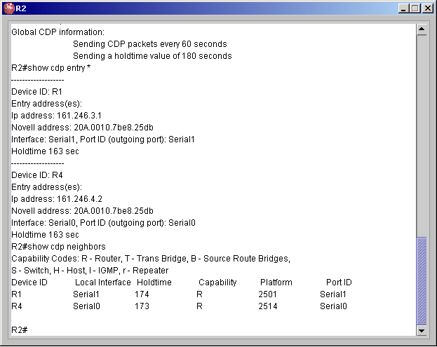

| Cisco Discovery Protocol | ||
| Cisco Discovery Protocol เป็นโพรโตคอลที่ซิสโก้สร้างขึ้นเพื่อ gather information about neighbor cisco device | ||
| 1. ล็อกอินเข้าเราเตอร์ที่ต้องการ หลังจากนั้นเข้าสู่ Privilege โหมดโดยพิมพ์คำสั่ง En หรือ Enable แล้วกด Enter | ||
| 2. ที่ R2 พิมพ์คำสั่ง Show cdp แล้ว Enter | ||
|
 |
||
| ข้อมูลที่แสดงผลออกมาหมายถึง
CDP แพ็กเก็ตจะถูกส่งออกไปทุกอินเทอร์เฟสที่ active ทุกๆ 90 วินาที และมีค่า
Holdtime 180 วินาที คือเมื่อได้รับข้อมูลจาก CDP ก็จะเก็บไว้เป็นเวลา 180
วินาที ถ้า R1 ไม่ได้รับข้อมูลอะไรจาก neighbor เป็นเวลา 180 วินาที ข้อมูลนั้นจะถูกลบทิ้งไป
|
||
| 3. ถ้าต้องการให้แพ็กเก็ต CDP
ถูกส่งออกไปทุกๆ 60 วินาที จะใช้คำสั่ง R2(config)#cdp timer 60 สำหรับค่าของช่วงเวลาจะอยู่ระหว่าง 5-900 |
||
|
 |
||
| 4. สำหรับคำสั่งที่เกี่ยวกับการดูค่า
CDP ของโปรแกรมนี้จะมี 3 คำสั่งหลัก คือ
Show CDP entry |
||
| 5. คำสั่ง Show CDP entry จะต้องมีการส่ง
argument ไปให้ด้วย ซึ่ง argument นี้ อาจส่งเป็น
Show CDP entry * |
||
|
 |
||
| 6. คำสั่ง Show CDP interface เป็นคำสั่งสำหรับแสดงข้อมูลที่ถูก encapsulate ไว้ที่อินเทอร์เฟส ซึ่งข้อมูลนี้จะมีการปรับเปลี่ยนทุกๆ 60 วินาที (สามารถเปลี่ยนแปลงได้ตามข้อ 3) และข้อมูลจะถูกเก็บได้ 180 วินาทีตามที่ได้กล่าวในข้อ 2 | ||
| 7. ใช้คำสั่ง Show CDP neighbors
เพื่อดูข้อมูลการเชื่อมต่อกับอุปกรณ์อื่นข้างเคียง
ข้อมูลของอุปกรณ์ข้างเคียงที่แสดงออกมาจะมีดังนี้ Neighbor Device ID : คือชื่อของเราเตอร์ข้างเคียง
ได้จากการที่เราเตอร์มีการแลกเปลี่ยน CDP information กัน |
||
|
 |
||
|
สำหรับโหมดการทำงานทั้งหมดของเราเตอร์สามารถดูได้ที่
Command
|
||